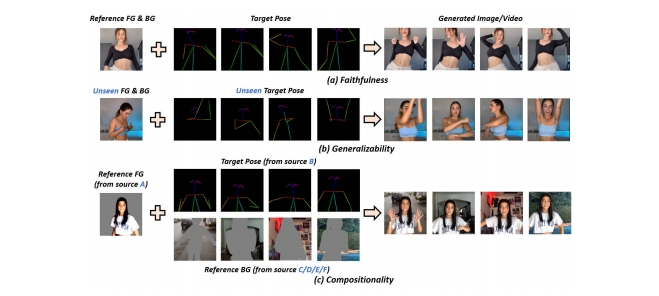

人类视频生成的基础知
关键子任务
根据驱动生成过程的模态将现有方法分为三类：文本驱动、音频驱动和姿势驱动
文本驱动的人类视频生成
讨论了如何使用文本描述来控制生成视频中的人类外观和动作。

| ID | Year | Name | Note | Tags | Link |
|---|---|---|---|---|---|
| 2025.5.21 | Interspatial Attention for Efficient 4D Human Video Generation | 以可控方式生成数字人(digital humans)的逼真视频 | link | ||
| 1 | 2024 | ID-Animator | To ensure the consistency of appearance in generated videos with the textual descriptions while preserving identity details during frames, ID-Animator [1] leverages a pre-trained textto-video (T2V) model with a lightweight face adapter to encode identity-relevant embeddings. | 人体外观控制 | |
| 83 | HMTV | 文本生成动作和相机运动，再生成图像 | 人体动作控制，2阶段方法 | ||
| 84 | 2020 | SignSynth | Gloss2Pose文生动作，GAN动作生视频 | 人体动作控制，2阶段方法 | |
| 85 | 2022 | H-DNA | 人体动作控制，2阶段方法 | ||
| 86 | 2024 | SignLLM | 文本->GLoss->Pose->Video | 人体动作控制，2阶段方法 | |
| 89 | 2024 | 文本->GLoss->Pose->Video | 人体动作控制，2阶段方法 | ||
| 53 | Text2Performer | involves the motion text and a motion encoder. motion text describes the movement, such as "She is swinging to the right." The model implicitly models these descriptions by separately representing appearance and motion, thereby generating high-quality videos with consistent appearance and actions. | text作为prompt直接生成video |
音频驱动的人类视频生成
语音驱动：要求生成的人体动作在高级语义方面及在情感和节奏方面与音频和谐。
音乐驱动：合成一个人在给定的音乐片段引导下跳舞或演奏某种乐器的视频，关注于低级节拍对齐。


语音驱动手势
以下是整理后的表格，概述了语音驱动人体视频生成模型的关键特性与演进：
| 方法/模型 | 基础架构 | 主要贡献 | 输入 | 输出 | 训练目标/优化方法 | 关键创新点 | 局限性 |
|---|---|---|---|---|---|---|---|
| 传统方法 [61][92][93] | 2D/3D骨架 + 分离式渲染 | 基于结构先验（骨架）生成手势视频 | 语音 + 2D/3D骨架 | 手势视频 | 骨架运动生成与视频渲染分离 | 利用手写结构先验（骨架）定义运动 | 外观信息丢失，控制困难；预训练姿态估计器导致抖动与误差累积 |
| ANGIE [62] | 无监督MRAA特征 + VQ-VAE + GPT网络 | 通过无监督特征与离散化建模提升手势生成 | 语音 | 手势视频 | VQ-VAE量化运动模式 + 自回归预测离散动作 | 无监督运动特征（MRAA）避免依赖骨架标注 | MRAA线性建模限制复杂区域表达；语音与协方差关联不准确 |
| DiffTED & He et al. | TPS运动模型 + 扩散模型 | 解耦运动与外观，保留身体区域关键信息 | 语音 + TPS关键点 | 多样化手势视频 | 扩散模型生成运动序列 + TPS渲染关键点至图像 | 基于扩散的多样化生成；解耦运动与外观（避免信息丢失） | 依赖TPS模型精度；计算成本较高 |
关键说明
- 技术演进：
- 传统方法依赖刚性骨架，导致外观信息丢失与抖动问题；
- ANGIE引入无监督特征与离散化建模，但受限于线性表达能力；
- DiffTED通过解耦运动与外观、结合扩散模型，实现高质量多样化生成。
- 核心挑战：
- 运动-外观平衡：传统方法牺牲外观信息，DiffTED通过解耦部分保留；
- 生成多样性：扩散模型（DiffTED）优于自回归（ANGIE）与骨架驱动方法。
- 未来方向：
- 结合物理仿真优化运动真实性（如减少抖动）；
- 提升复杂区域（手部、微表情）的细粒度控制能力。
此表格对比了语音驱动手势视频生成的关键方法，凸显从结构先验到无监督学习再到解耦扩散模型的技术路径。
语音驱动口型(视频生成)
唇形同步技术需要根据输入的音频生成对应的唇部动作，同时保持头部姿态和人物身份的一致性。
Image + Audio -> Video
以下是整理后的表格，概述了音频驱动说话人脸生成方法的分类、核心特性与挑战：
| 方法类型 | 关键方法/技术 | 输入 | 输出 | 优点 | 局限性 |
|---|---|---|---|---|---|
| Person-Specific | 3D模型（Song et al., 2020; Thies et al., 2020） NeRF（Park et al., 2022） | 音频 + 目标人物多分钟训练视频 | 高保真、身份保留的说话视频 | 高保真，精确的唇部-音频映射 | 训练耗时，依赖大量目标数据，难以实时应用 |
| One-Shot Talking Head | 两阶段流程（音频→标志→视频，Chen et al., 2019） 3D系数驱动（Chen et al., 2020） | 音频 + 单张参考图像 | 多样化表情与头部运动的视频 | 单图驱动，灵活性强；扩散模型（Tian et al., 2024）提升生成多样性 | 细节缺失（牙齿/纹理）；扩散模型导致身份细节丢失、计算成本高、推理步骤复杂 |
| Few-Shot Face Visual Dubbing | 编码器-解码器（Prajwal et al., 2020a） 变形修复网络（Zhang et al., 2023） | 音频 + 源人脸（少量参考图） | 嘴部替换的配音视频 | 直接替换唇部区域，适配性强 | 纹理模糊、身份不一致；修复网络易过拟合，局部颜色差异 |
关键说明
- 输入需求差异：
- Person-Specific：依赖目标人物大量训练数据；
- One-Shot：仅需单张参考图，灵活性高；
- Few-Shot：基于少量参考图进行局部（嘴部）替换。
- 核心挑战：
- 保真度与效率：Person-Specific保真但低效，One-Shot/Diffusion多样但计算昂贵；
- 细节保留：牙齿、嘴部纹理与高频细节仍是技术瓶颈（尤其One-Shot与Few-Shot）。
- 代表工作演进：
- 3D模型 → 扩散模型：从基于物理建模转向生成式AI，提升多样性但牺牲确定性；
- 编码器-解码器 → 变形修复：Few-Shot方法逐步优化纹理保留，但仍需解决过拟合问题。
此表格对比了音频驱动说话人脸生成的核心方法类型，凸显其在不同应用场景下的优势与待突破点。
唇音同步(视频编辑)
Video + Audio -> Video
- 扩散模型（如[29]）在细节丰富度上占优，但生成速度较慢；
- GAN类方法（如MuseTalk）牺牲部分细节以提升速度。
基于扩散模型的唇音同步方法
| ID | Year | Name | Note | Tags | Link |
|---|---|---|---|---|---|
| 89 | 2025.3.13 | LatentSync: Taming Audio-Conditioned Latent Diffusion Models for Lip Sync with SyncNet Supervision | 1. 在latent space训练，在pixel space监督 2. 用TREPA代表temporal layer 3. 系统性地分析SyncNet的训练参数与效果 | LDM, 开源 | link |
| 2023 | Speech Driven Video Editing via an Audio-Conditioned Diffusion Model | > ✅（1）把说话的部分 mask 掉 （2）用 diffusion 根据 Audio Feature 生成说话的部分。 ✅ 额外约束：（1）reference 状态 （2）前后帧 smooth ✅ 语音驱动嘴形。 |  |
| 方法/论文 | 关键架构 | 训练策略 | 生成阶段说明 | 输入 → 输出 | 主要创新点 |
|---|---|---|---|---|---|
| [34] & [2] 2024 | 像素空间扩散模型 | 端到端音频条件扩散 | 单阶段：直接生成同步唇部图像 | 音频 → 图像 | 端到端像素级扩散，无需中间表示 |
| [57] 2024 | 扩散模型 + VAE | 两阶段训练 | 阶段1：扩散模型（音频→运动） 阶段2：VAE（运动→图像） | 音频 → 运动 → 图像 | 分阶段解耦运动与渲染，降低生成复杂度 |
| [64] 2024.08 | Transformer + 扩散模型 | 两阶段训练 | 阶段1：Transformer（音频→运动） 阶段2：扩散模型（运动→图像） | 音频 → 运动 → 图像 | Transformer编码音频时序，扩散模型细化生成 |
| [29] 2024 | 扩散自编码器 | 两阶段训练 | 阶段1：扩散自编码器（掩码图→语义代码） 阶段2：扩散模型（语义代码+音频→图像） | 音频 + 掩码图 → 图像 | 结合语义潜在代码与音频条件，增强可控性 |
非扩散模型的唇音同步方法
| ID | Year | Name | Note | Tags | Link |
|---|---|---|---|---|---|
| 2025.6.17 | SyncTalk++: High-Fidelity and Efficient Synchronized Talking Heads Synthesis Using Gaussian Splatting | link | |||
| 90 | 2024.10 | MuseTalk: Real-Time High Quality Lip Synchronization with Latent Space Inpainting | 1. 借用扩散架构但采用GAN式训练（无扩散过程），平衡生成速度与质量 2. 用根据特征筛选的方式选择reference image，提升生成质量。 | LDM, 开源，实时，GAN, 逐帧, VQ-VAE | link |
| 91 | 2020.8.23 | A Lip Sync Expert Is All You Need for Speech to Lip Generation In The Wild | 1. 首个跨ID的唇间同步口型生成方法 2. 预训练唇同步判别器（SyncNet监督） + 对抗学习 3. 提出唇音对齐性指标LSE-C和LSE-D | Wav2Lip， GAN, SyncNet, LSE-C, LSE-D | link |
| SyncNet监督生成器 | | 单阶段：生成器直接输出唇部同步视频 | 音频 → 图像 | 引入SyncNet作为判别器，提升唇部同步精度 |
| 方法/论文 | 关键架构 | 训练策略 | 生成阶段说明 | 输入 → 输出 | 主要创新点 |
|---|---|---|---|---|---|
| [20] 2023 | VQ-VAE + 量化空间生成器 | 分阶段训练 | 阶段1：VQ-VAE编码面部/头部姿势 阶段2：量化空间生成高分辨率图像 | 音频 → 量化代码 → 图像 | 在量化空间中训练生成器，提升图像分辨率 |
| StyleSync [18] 2023 | StyleGAN2生成器 | 对抗学习（SyncNet监督） | 单阶段：StyleGAN2生成同步唇部图像 | 音频 → 图像 | 结合StyleGAN2高保真生成能力与SyncNet监督 |
| VideoReTalking [8] 2022 | 多组件框架（重演+同步+细化） | 分模块联合训练 | 阶段1：语义重演网络 阶段2：唇音同步网络 阶段3：身份感知细化 | 音频 → 图像 | 模块化设计分离语义、同步与身份控制 |
| DINet [63] 2023 | 特征图变形网络, 双编码器 + 面部动作单元（AU）系统 | 端到端训练 | 单阶段：驱动音频直接变形特征图生成嘴型 | 音频 → 图像 | 通过特征变形实现精细嘴型控制，避免分阶段误差累积 |
| 模型名称 | 核心技术 | 主要贡献 | 关键创新点 | 优势 |
|---|---|---|---|---|
| Wav2Lip [Pra20b] | 预训练唇同步判别器 + 对抗训练 | 生成高逼真唇部同步视频 | 引入SyncNet作为判别器监督生成器，优化唇-音频对齐 | 广泛认可的唇同步效果，适用于多种场景 |
| VideoRetalking [Che22] | 三阶段流程（表情中和→唇同步→身份增强） | 高质量视频编辑的唇同步生成 | 分阶段处理（表情中和+身份感知增强），提升身份一致性 | 适用于视频编辑，保持人物身份与表情自然 |
| DI-Net [Zha23] | 双编码器 + 面部动作单元（AU）系统 | 生成逼真且情感一致的面部视频 | 结合面部动作单元系统控制情感表达，双编码器分离内容与身份特征 | 情感一致性高，适合需要情绪表达的应用（如虚拟主播） |
| TalkLip [Wan23] | 对比学习 + Transformer音频编码 | 提升唇语音同步的全局时间依赖性 | 对比学习优化音频-视频对齐；Transformer建模全局时序关系 | 同步效果更精准，适应复杂语音节奏与长时序依赖 |
姿势驱动的人类视频生成
包括单条件姿势引导方法和多条件姿势引导方法。


2D动作驱动
pose + reference Image -> video
| ID | Year | Name | Note | Tags | Link |
|---|---|---|---|---|---|
| 108 | 2025.4.30 | ReVision: High-Quality, Low-Cost Video Generation with Explicit 3D Physics Modeling for Complex Motion and Interaction | 参数化的三维物理知识显式地集成到一个预训练的条件视频生成模型中，从而显著增强了其生成高质量、包含复杂动作和交互的视频的能力 1.使用一个视频扩散模型生成一个粗糙的视频 2. 从该粗略视频中提取一组 2D 和 3D 特征，构建一个以对象为中心的 3D 表示，并通过我们提出的参数化物理先验模型对其进行优化，生成精确的 3D 动作序列。 3. 这一优化后的动作序列被反馈到同一个视频扩散模型中作为额外的条件输入 | 三阶段, 即插即用 | link |
| 2025.5.6 | FlexiAct: Towards Flexible Action Control in Heterogeneous Scenarios | 姿势引导视频合成 | link | ||
| 2025.5.6 | Real-Time Person Image Synthesis Using a Flow Matching Model | 姿势引导人物图像合成， flow matching | link | ||
| 37 | 2024 | TCAN: Animating Human Images with Temporally Consistent Pose Guidance using Diffusion Models | 通过修正attention map实现背景的时序稳定性 | Diffusion | link |
| 2 | 2024.1 | Follow Your Pose: Pose-Guided Text-to-Video Generation using Pose-Free Videos | uses text descriptions to provide semantic information about the content of the characters, ensuring the generated videos align with the textual descriptions. | 人体外观控制 设计了一个两阶段训练方案，利用图像姿态对和无姿态视频生成姿态可控的角色动画 |  |
| 2023 | DreamPose: Fashion Image-to-Video Synthesis via Stable Diffusion | ||||
| 121 | 2023 | MagicAnimate: Temporally Consistent Human Image Animation using Diffusion Model | |||
| 2023 | Dancing avatar: Pose and text-guided human motion videos synthesis with image diffusion model |  | |||
| 2023 | Disco: Disentangled control for referring human dance generation in real world |  |
视频动作驱动
| ID | Year | Name | Note | Tags | Link |
|---|---|---|---|---|---|
| 99 | 2025.5.19 | FinePhys: Fine-grained Human Action Generation by Explicitly Incorporating Physical Laws for Effective Skeletal Guidance | 1. 从视频中提取2D pose 2. 2D pose lifting到3D pose 3. 对3D pose作物理优化 4. 用优化后的pose引导视频生成 | 可微的物理优化过程，pose信息来自视频，无外观信息控制 | link |
| 53 | 2024 | Implicit Warping for Animation with Image Sets | 用driving视频中的人去驱动reference图像中的人，生成reference做与driving中相同动作的视频 | pose信息来自视频 外观信息来自Reference Image Cross Attention | link |
3D动作驱动
| ID | Year | Name | Note | Tags | Link |
|---|---|---|---|---|---|
| 2025.5.28 | LatentMove: Towards Complex Human Movement Video Generation | 专门为高度动态的人体动画量身定制的、基于DiT(扩散Transformer)的框架的图像到视频(I2V)生成 | link | ||
| 42 | 2024 | HumanVid: Demystifying Training Data for Camera-controllable Human Image Animation | 3D建模 + 3D重定向 + 渲染，动作控制+相机控制 | 人物视频生成，3D管线 | link |
虚拟换衣
| ID | Year | Name | Note | Tags | Link |
|---|---|---|---|---|---|
| 2025 | RealVVT: Towards Photorealistic Video Virtual Try-on via Spatio-Temporal Consistency | 虚拟试衣 |
数据集和评估指标
数据集


评估指标
挑战和难题
- 遮挡问题：身体部位重叠或多人遮挡很常见，但大多数模型不能很好地处理相互影响的问题[98]，[138]。
- Body Deformation
- 外观不一致
- 背景影响
- 时序不一致
- 不自然的姿势
- 文本驱动或语音驱动中，由于本身是一对多问题，可能受限于数据集而存在偏向性
影响生成质量的因素
生成范式。
与姿势驱动方法（可以视为一阶段方法）相比，文本和音频驱动方法可以分为一阶段和两阶段方法。前者直接使用输入文本或音频作为提示来指导人类视频生成，而后者从输入文本或音频生成姿势，然后使用这些生成的姿势作为信号来指导人类视频生成。在两阶段方法中引入各种姿势类型（例如骨架姿势）提供了额外的几何和语义信息，从而提高了视频运动的准确性和真实感。这使得两阶段方法明显比一阶段方法更有效，尽管会牺牲一些效率。
backbone
SD 和 SVD 等扩散模型因其卓越的性能和多样性而广泛应用于各种生成任务，包括人类视频生成。然而，与在单个采样步骤中生成样本的 GAN 不同，扩散模型需要多个采样步骤，从而增加了训练和推理的时间成本。
pose控制信号
不同类型的条件姿势之所以有效，是因为它们提供了补充信息。
- 骨骼姿势准确地描述了帧中人体的空间信息以及身体部位的相对位置。然而，它捕获离散的姿势变化而不是连续的运动细节，提供有限的时间连贯性。
- 光流本质上包括时间信息，捕获连续帧之间的变化并提供特征空间中的连续运动轨迹。这使得模型能够生成帧之间平滑过渡的视频，避免跳跃或不连续。
- 深度地图捕捉人体与背景之间的距离信息，以及表面细节和深度变化。
- 3D 网格提供了骨骼姿势所缺乏的物体表面的详细几何结构。
总之，不同类型的姿势提供互补的时空信息，并且不存在满足所有要求的统一姿势类型。不同的场景和问题可能需要不同的姿势。
未来研究方向
- 大规模高质量人类视频数据集
- 长视频生成
- 高保真视频生成
- 提高人类视频扩散模型的效率
- 细粒度可控性
- 交互性。
Reference
- A Comprehensive Survey on Human Video Generation: Challenges, Methods, and Insights
- https://github.com/wentaoL86/Awesome-Human-Video-Generation